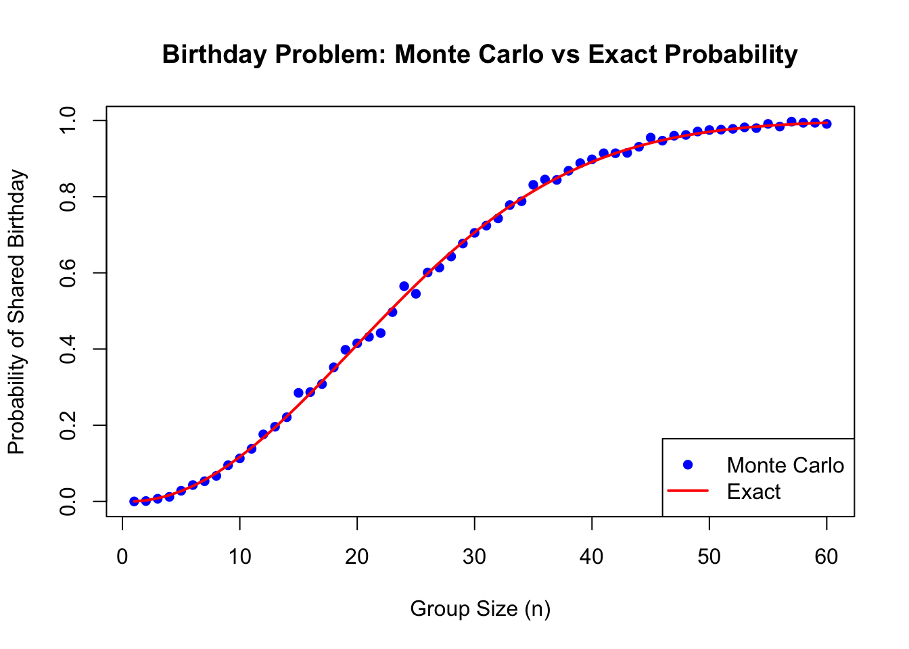
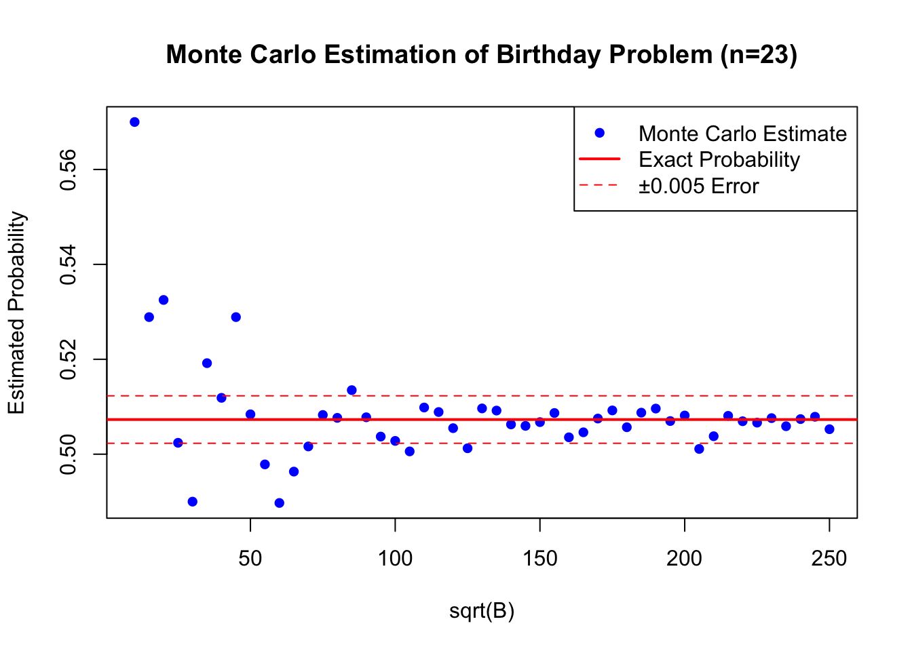
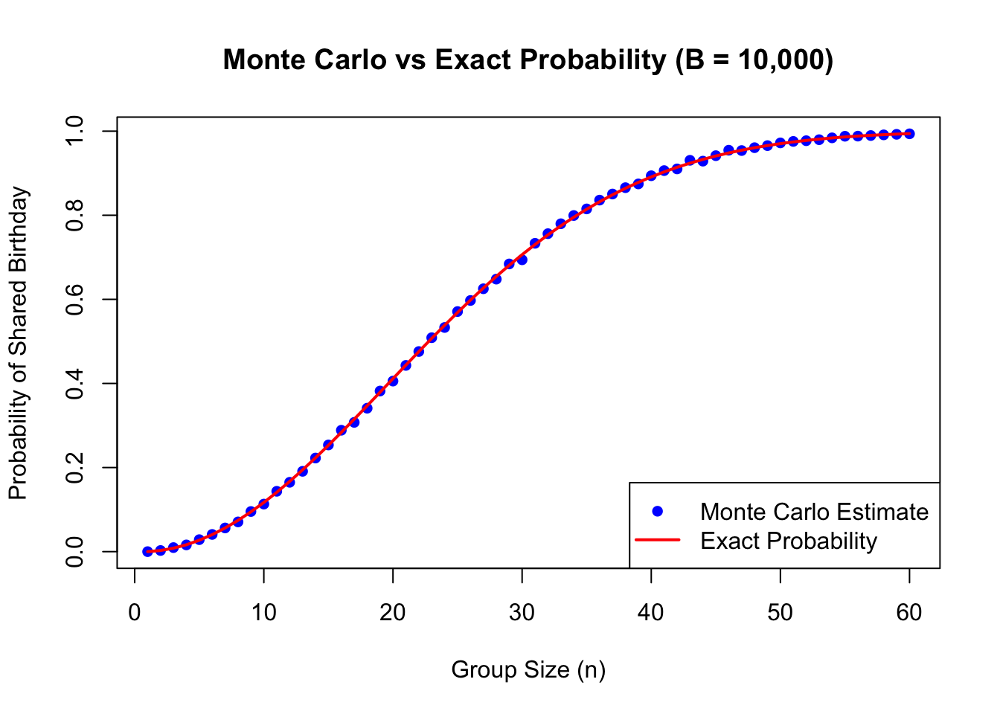
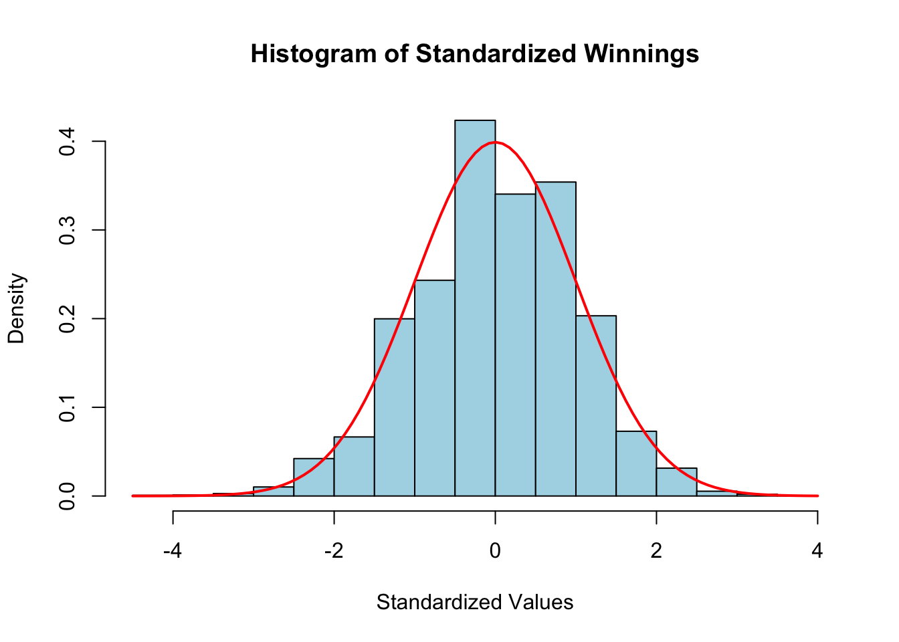
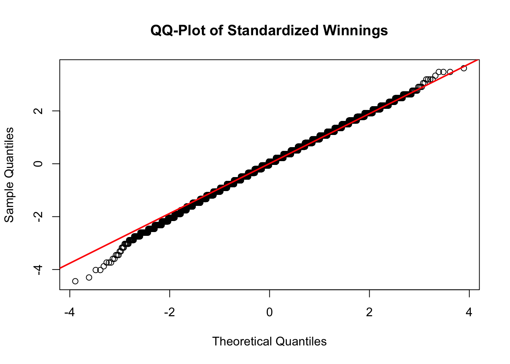

same_birthday <- function(n){
birthdays <- sample(1:365, n, replace = TRUE)
return(any(duplicated(birthdays)))
} Problem set 5
Please answer each of the exercises below. For those asking for a mathematical calculation please use LaTeX to show your work. Each problem is worth 1 point, for a total of 16 points.
Important: Make sure that your document renders in less than 5 minutes.
- Write a function called
same_birthdaythat takes a numbernas an argument, randomly generatesnbirthdays and returnsTRUEif two or more birthdays are the same. You can assume nobody is born on February 29.
Hint: use the functions sample, duplicated, and any.
- Suppose you are in a classroom with 50 people. If we assume this is a randomly selected group of 50 people, what is the chance that at least two people have the same birthday? Use a Monte Carlo simulation with $B=$1,000 trials based on the function
same_birthdayfrom the previous exercises.
set.seed(2025)
B <- 10^3
results <- replicate(B, same_birthday(50))
probability <- mean(results)
print(probability)[1] 0.972- Redo the previous exercises for several values on
nto determine at what group size do the chances become greater than 50%. Set the seed at 1997.
set.seed(1997)
compute_prob <- function(n, B = 10^3){
result <- replicate(B, same_birthday(n))
mean(result)
}
group_sizes <- 1:100
prob <- sapply(group_sizes, compute_prob)
a <- min(group_sizes[prob > 0.5])
cat("The group size where the chance becomes greater than 50% is:", a, "\n")The group size where the chance becomes greater than 50% is: 23 The group size where the chance becomes greater than 50% is: FILL IN THE BLANK
- These probabilities can be computed exactly instead of relying on Monte Carlo approximations. We use the multiplication rule:
\[ \mbox{Pr}(n\mbox{ different birthdays}) = 1 \times \frac{364}{365}\times\frac{363}{365} \dots \frac{365-n + 1}{365} \]
Plot the probabilities you obtained using Monte Carlo as a points and the exact probabilities with a red line.
Hint: use the function prod to compute the exact probabilities.
exact_prob <- function(n){
if (n > 365) return(1)
p <- prod(365:(365-n+1)/365)
return(1-p)
}
sizes <- 1:60
exact_p <- sapply(sizes, exact_prob)
monte_carlo_p <- sapply(sizes, compute_prob)
plot(sizes, monte_carlo_p, pch = 16, col = "blue",
xlab = "Group Size (n)", ylab = "Probability of Shared Birthday",
main = "Birthday Problem: Monte Carlo vs Exact Probability")
lines(sizes, exact_p, col = "red", lwd = 2)
legend("bottomright", legend = c("Monte Carlo", "Exact"), col = c("blue", "red"),
pch = c(16, NA), lty = c(NA, 1), lwd = c(NA, 2))
- Note that the points don’t quite match the red line. This is because our Monte Carlos simulation was based on only 1,000 iterations. Repeat exercise 2 but for
n = 23and tryB <- seq(10, 250, 5)^2number iterations. Plot the estimated probability againstsqrt(b). Add horizontal lines around the exact probability \(\pm\) 0.005. Note this could take several seconds to run. Set the seed to 1998.
set.seed(1998)
B <- seq(10, 250, 5)^2
n <- 23
mc_prob <- sapply(B, function(B) mean(replicate(B, same_birthday(n))))
e_prob <- exact_prob(n)
plot(sqrt(B), mc_prob, pch = 16, col = "blue",
xlab = "sqrt(B)", ylab = "Estimated Probability",
main = "Monte Carlo Estimation of Birthday Problem (n=23)")
abline(h = e_prob, col = "red", lwd = 2)
abline(h = e_prob + 0.005, col = "red", lty = 2)
abline(h = e_prob - 0.005, col = "red", lty = 2)
legend("topright", legend = c("Monte Carlo Estimate", "Exact Probability", "±0.005 Error"),
col = c("blue", "red", "red"), pch = c(16, NA, NA), lty = c(NA, 1, 2), lwd = c(NA, 2, 1))
Describe when it starts to stabilize in that the estimates are within 0.005 for the exact probability.
YOUR SHORT ANSWER HERE The estimates begin to stabilize around sqrt(B) = 100 or B = 10000 where most points remain within the error margin of the exact probability. Beyond this point, increasing B further leads to even smaller fluctuations.
- Repeat exercise 4 but use the results of exercise 5 to select the number of iterations so that the points practically fall on the red curve.
Hint: If the number of iterations you chose is too large, you will achieve the correct plot but your document might not render in less than five minutes.
n <- seq(1,60)
set.seed(1999)
B <- 10^4
mc_probs <- sapply(n, function(n) mean(replicate(B, same_birthday(n))))
exact_probs <- sapply(n, exact_prob)
plot(n, mc_probs, pch = 16, col = "blue",
xlab = "Group Size (n)", ylab = "Probability of Shared Birthday",
main = "Monte Carlo vs Exact Probability (B = 10,000)")
lines(n, exact_probs, col = "red", lwd = 2)
legend("bottomright", legend = c("Monte Carlo Estimate", "Exact Probability"),
col = c("blue", "red"), pch = c(16, NA), lty = c(NA, 1), lwd = c(NA, 2))
7a. In American Roulette, with 18 red slots, 18 black slots, and 2 green slots (0 and 00), what is the probability of landing on a green slot?
\[ P(\text{green slot}) = \frac{\text{Number of green slots}}{\text{Number of total slots}} = \frac{2}{18+18+2} = \frac{2}{38} \approx 0.0526 \]
7b. The payout for winning on green is $17 dollars. This means that if you bet a dollar and it lands on green, you get $17. If it lands on red or black you lose your dollar. Create a sampling model using sample to simulate the random variable \(X\) for the Casino’s winnings when one person bets on green.
n <- 1
set.seed(2025)
casinos_win <- sample(c(-17, 1), n, replace = TRUE, prob = c(2/38, 36/38))
print(casinos_win)[1] 1- Now create a random variable \(S\) of the Casino’s total winnings if $n = $1,000 people bet on green. Use Monte Carlo simulation to estimate the probability that the Casino loses money.
set.seed(2025)
n <- 1000
simulations <- 10000
total_winnings <- replicate(simulations, sum(sample(c(-17, 1), n, replace = TRUE, prob = c(2/38, 36/38))))
prob_casino_loses <- mean(total_winnings < 0)
print(prob_casino_loses)[1] 0.3338- What is the expected value of \(X\)?
\[ E[X] = \sum x_i P(x_i) = (-17) \times \frac{2}{38} + (1) \times \frac{36}{38} = -\frac{34}{38} + \frac{36}{38} = \frac{2}{38} \approx 0.0526 \]
- What is the standard error of \(X\)?
\[ \sigma_X = \sqrt{E[X^2] - (E[X])^2} = \sqrt{((-17)^2 \times \frac{2}{38} + (1)^2 \times \frac{36}{38}) - (\frac{2}{38})^2} = \sqrt{\frac{614}{38} - \frac{4}{1444}} = \sqrt{16.16} \approx 4.02 \]
- What is the expected value of \(S\)? Does the Monte Carlo simulation confirm this?
\[ E[S] = n \cdot E[X] = 1000 \times 0.0526 = 52.63 \]
set.seed(2025)
n <- 1000
simulations <- 10000
total_winnings <- replicate(simulations, sum(sample(c(-17, 1), n, replace = TRUE, prob = c(2/38, 36/38))))
monte_carlo_ES <- mean(total_winnings)
print(monte_carlo_ES)[1] 53.7778YOUR SHORT ANSWER HERE Yes, the Monte Carlo simulation confirms the expected value. The result 54 gets very clos to 52.63.
- What is the standard error of \(S\)? Does the Monte Carlos simulation confirm this?
\[ SE(S) = \sigma_S = \sqrt{n} \cdot \sigma_X = \sqrt{1000} \times \sqrt{16.16} \approx 127.2 \]
set.seed(2025)
n <- 1000
simulations <- 10000
total_winnings <- replicate(simulations, sum(sample(c(-17, 1), n, replace = TRUE, prob = c(2/38, 36/38))))
monte_carlo_SE_S <- sd(total_winnings)
print(monte_carlo_SE_S)[1] 127.3515YOUR SHORT ANSWER HERE Yes, the Monte Carlo simulation confirms the standard error of S, as the simulated value 127 is close to 127.2.
- Use data visualization to convince yourself that the distribution of \(S\) is approximately normal. Make a histogram and a QQ-plot of standardized values of \(S\). The QQ-plot should be on the identity line.
set.seed(2025)
n <- 1000
simulations <- 10000
total_winnings <- replicate(simulations, sum(sample(c(-17, 1), n, replace = TRUE, prob = c(2/38, 36/38))))
standardized_winnings <- (total_winnings - mean(total_winnings)) / sd(total_winnings)
hist(standardized_winnings, probability = TRUE, main = "Histogram of Standardized Winnings",
xlab = "Standardized Values", col = "lightblue", border = "black")
curve(dnorm(x, mean = 0, sd = 1), col = "red", lwd = 2, add = TRUE)
qqnorm(standardized_winnings, main = "QQ-Plot of Standardized Winnings")
qqline(standardized_winnings, col = "red", lwd = 2)
- Notice that the normal approximation is slightly off for the tails of the distribution. What would make this better? Increasing the number of people playing \(n\) or the number of Monte Carlo iterations \(B\)?
Answer here Increasing n is the better choice because it ensures that the CLT applies more effectively, making S more normally distributed. Increasing B only helps with reducing variability in estimation but does not improve the underlying normality of S.
- Now approximate the casino profit probability estimated using CLT. Does it agree with the Monte Carlo simulation?
\[ S \sim N(E[S], \sigma_S^2) = N(52.63, 127.2)\\ P(S > 0) = P\left(\frac{S - E[S]}{\sigma_S} > \frac{0 - 52.63}{127.2}\right) = P\left( Z > -0.414\right) \approx 0.66 \]
monte_carlo_profit_prob <- mean(total_winnings > 0)
print(monte_carlo_profit_prob)[1] 0.6662Answer here The Monte Carlo simulation confirms the CLT estimate, as the probability computed is approximately 66%, showing that the casino is likely to make a profit.
- How many people \(n\) must bet on green for the Casino to reduce the probability of losing money to 1%. Check your answer with a Monte Carlo simulation.
\[ P(S > 0) = 0.99 \\ S \sim N(nE(X), \sigma_S^2) = (E[S], \sigma_S^2) = N(52.63, 127.2) \\ P\left( S > 0 \right) = P\left(\frac{S - E[S]}{\sigma_S} > \frac{0 - nE[X]}{\sigma_S} \right) = P\left(Z > \frac{-nE[X]}{\sigma_S} \right) = 0.99 \\ P\left(Z > -2.33 \right) = 0.99 \\ \frac{-nE[X]}{\sqrt{n} \sigma_X} = -2.33\\ n = \left(\frac{2.33 \times 4.02}{0.0526} \right)^2 \approx 32216 \]
set.seed(2025)
simulations <- 10000
estimate_profit_prob <- function(n) {
total_winnings <- replicate(simulations, sum(sample(c(-17, 1), n, replace = TRUE, prob = c(2/38, 36/38))))
return(mean(total_winnings > 0))
}
n_values <- seq(30000, 35000, by = 500)
profit_probs <- sapply(n_values, estimate_profit_prob)
n_99 <- n_values[which(profit_probs >= 0.99)[1]]
print(n_99)[1] 31500